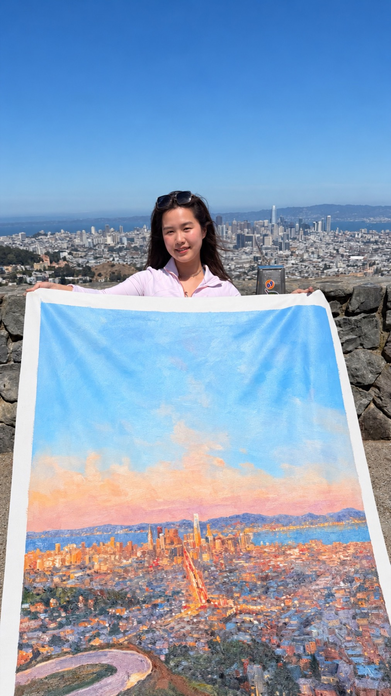

01 / Twin Peaks · Day
A city,
held still.
From Twin Peaks, every street is visible. Distance makes the city legible, not knowable. I painted the map. Memory chose what remained.
Move across the painting. Click to open it.
Painter · Visual storyteller · San Francisco
Memory is how a place continues.

Selected work · 2026
Five paintings. Five versions of one city.
01 / Twin Peaks · Day
From Twin Peaks, every street is visible. Distance makes the city legible, not knowable. I painted the map. Memory chose what remained.
Move across the painting. Click to open it.
02 / Twin Peaks · Sunset
At sunset, the streets lose their names. The city is still present, already becoming past. I painted that interval.
Move across the painting. Click to open it.
03 / Lands End
The trees bend alone. The grove moves as one body. Every force leaves a shape. We call it a self.
Move across the painting. Click to open it.
04 / Sutro Baths
The sunset lasted minutes. The ocean kept no record. I painted from memory. Accuracy disappeared. The moment remained.
Move across the painting. Click to open it.
05 / Deadman’s Point
The sign says danger. Weather made it part of the coast. I painted what time and attention had already transformed.
Move across the painting. Click to open it.
Ideas in Ink · Ongoing study
A vessel breaks. A plant grows through it. The words settle into the rim. Nothing is repaired. The object becomes whole by showing its history. This is amor fati: loving the shape life takes after it happens.
The break does not interrupt the beauty. It makes the beauty possible.
About
I paint the border between place and memory.
San Francisco begins this archive of migration, history, and becoming.